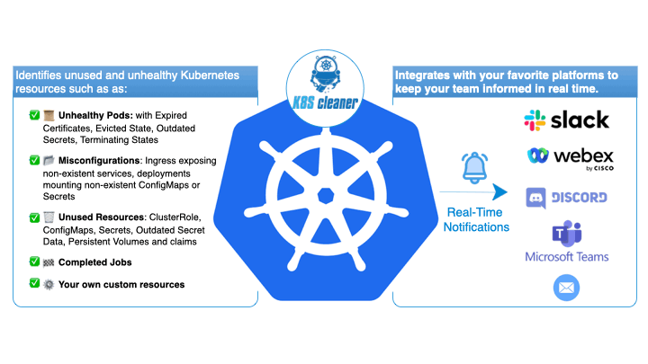

Optimize Your Kubernetes Clusters with K8s Cleaner
Designed for Kubernetes administrators, K8s Cleaner efficiently identifies and removes unused resources to enhance cluster performance and reduce operational costs.



Designed for Kubernetes administrators, K8s Cleaner efficiently identifies and removes unused resources to enhance cluster performance and reduce operational costs.
As Kubernetes deployments grow more complex, maintaining a clean and efficient cluster is paramount. K8s-cleaner is a robust Kubernetes controller that identifies and eliminates unused, stale, and unhealthy resources in your cluster, ensuring optimal performance and resource utilization.
K8s Cleaner is a powerful Kubernetes controller that automates the identification, removal, and updating of stale, orphaned, or unhealthy resources. This includes a wide variety of resource types such as ClusterRole, ConfigMap, Deployment, HorizontalPodAutoscaler, Ingress, Job, PersistentVolume, Pod, Role, Secret, ServiceAccount, and StatefulSet. By ensuring efficient and timely cleanup, K8s Cleaner maintains a clean and organized cluster environment, optimizing resource utilization and enhancing overall cluster performance.
Learn MoreK8s Cleaner allows users to specify the frequency of scans using Cronb> syntax, enabling flexible and customizable scheduling of various resource management tasks. To enhance user safety and prevent unintended changes, a convenient Dry Runb> feature is also available. This mode allows users to preview which resources will be affected by the cleanup process without making any actual changes to the cluster. It effectively identifies matching resources while running the necessary logic, providing valuable insights on the current resource status before any deletion or updates take place, thereby ensuring informed decision-making throughout the cleanup process.
Learn MoreWith robust filtering capabilities, K8s Cleaner can select resources based on user-defined labels, allowing for more precise targeting of outdated components. Users can refine their filters by specifying label keys, operations (equal, different, etc.), and values. Additionally, K8s Cleaner keeps users informed about every cleaned-up resource, whether removed or optimized. Notifications can be sent via popular channels like Slack, Webex, Discord, Email, and Microsoft Teams, allowing teams to stay updated on resource management activities.
Learn MoreK8s Cleaner's integrates with existing Kubernetes frameworks to ensure a smooth onboarding process. Users can easily schedule the controller as a DaemonSet or CronJob to run periodically. Furthermore, advanced users can leverage the Lua scripting language to define custom selection criteria for complex resource management scenarios. This dynamic capability empowers users to refine how K8s Cleaner identifies and handles stale resources, streamlining maintenance and enhancing the overall health of their Kubernetes environments.
Learn MoreDedicated professionals committed to delivering an exceptional Kubernetes resource management experience.